- There are 4 aspects of Object-Oriented programming (OOP):
a) Abstraction (fancy way of saying that you can ignore most of the details)
b) Encapsulation (data-hiding using
private members to access state of a class)
c) Inheritance
d) Polymorphism (says that - don't worry about the reference you have at hand. Go ahead and call the method and
we will call the right method based on the true type of the object at runtime, and not the perceived type of the
object at compile time)
-
SO Link that explains
the difference betweenn Abstraction and Encapsulation.
What is Composition, Aggregation, and Association?
Composition
: Think of it as a "has-a" kind of relationship, compared to inheritance which is more of a "is-a" kind of relationship. For eg. a
building
has a room. Composition is a strong kind of "has-a" relationship because the containing object owns it. Therefore, the objects' lifecycles are tied. It means
that if we destroy the owner object, its members also will be destroyed with it. So if we destroyed the building, the room would also be destroyed.
In Java, we can model this with a non-static inner class:
class Building {
class Room {}
}
Aggregation
: Aggregation is also a "has-a" relationship. What distinguishes it from composition, that
it doesn't involve owning. As a result, the lifecycles of the objects aren't tied: every one of them can exist independently of each other. In Java, we can model aggregation
with a plain old reference:
class Wheel {}
class Car {
List<Wheel> wheels;
}
Association:
Association is the weakest relationship between the three. It isn't a "has - a"
relationship, none of the objects are parts or members of another. In Java, we can model association the same way as aggregation:
class Child {}
class Mother {
List<Child> children;
}
How can we tell if a reference means aggregation or association?
Well, we can't. The difference is only logical: whether one of the objects is part of the other or not.
- And then there is
this SO link.
What is the SOLID principle?
-
Single-responsibility principle: A class should only have a single responsibility, that is, only changes to one part of the software's specification should be able to
affect
the specification of the class.
-
Open-closed principle: Software entities... should be open for extension, but closed for modification.
-
Liskov substitution principle: Objects in a program should be replaceable with instances of their subtypes without altering the correctness of that program.
This SO Link explains using examples what this actually means.
- Check
this on Baeldung for a much clearer explanation. It says:
It's valid to make an overridden method to accept arguments of different types and return a different type as well, but with full adherence to these rules. (But note that not
all of these rules apply in the case of java. Java rules are present below this)
a) If a method in the base class takes argument(s) of a given type, the overridden method should take the same type or a
supertype (NOTE: It's supertype, NOT subtype)
(a.k.a.
contravariant method arguments). Refer
66.2 and
66.3.
b) If a method in the base class returns
void, the overridden method should return
void
c) If a method in the base class returns a primitive, the overridden method should return the same primitive
d) If a method in the base class returns a certain type, the overridden method should return the same type or a
subtype (NOTE: It's subtype, NOT supertype) (a.k.a.
covariant
return type). Refer
66.1.
e) If a method in the base class throws an exception, the overridden method must throw the same exception or a subtype of the base class exception
In the case of java, specifically when you are overriding methods
:
-
Source.
- The overriding method is
covariant in the return type and
invariant in the argument types. That means that the return type of the overriding method can be a
subclass of the return type of the overridden method, but the argument types must match exactly.
- If the argument types aren't identical in the subclass then the method will be
overloaded instead of
overridden. You should always use the
@Override annotation to ensure that this doesn't happen accidentally.
-
What is the reasoning behind not allowing
supertypes on Java method overrides?
Expand Gist 
-
Interface segregation principle: Many client-specific interfaces are better than one general-purpose interface.
-
Dependency inversion principle: One should depend upon abstractions, [not] concretions.
Inheritance Basics
- A class that does the inheriting is called the
subclass and the class that is inherited is called the
superclass.
Therefore, a subclass is a specialized version of the superclass and adds its own unique elements.
- class
subclass-name extends
superclass-name{
}
Expand Gist
- You can only specify one super class for any subclass that you create. Java does not support the inheritance
of multiple superclasses into a single subclass. What you can do is create a hierarchy of inheritance in which a
subclass becomes a superclass of another subclass.
Member Access and Inheritance
- Although a subclass includes all of the members of its superclass, it cannot access those members of its
superclass that have been declared as
private. A member declared as
private is ONLY
accessible by other members of its own class. These members are not accessible by any code outside of its class,
not even by its subclasses.
A superclass variable can reference a subclass object
A reference of a superclass can be assigned a reference to any subclass derived from that superclass. It is
important to understand that
it is the type of the reference variable - not the type of the object that
it refers to - that determines what members can be accessed. That is when a reference to a subclass
object is assigned to a superclass reference variable, you will have access to only those parts of the
object defined by the superclass.
Expand Gist
Understanding super
super has two general forms. The first calls the superclass' constructor. The second is used to
access a member of the superclass that has been hidden by a member of a subclass.
a) Using super to call superclass constructors
A subclass can call a constructor defined by its superclass by use of the following form of
super:
super(arg-list)
Here
arg-list specifies any arguments needed by the constructor in the superclass.
super() must also always be the first statement that is executed inside a subclass'
constructor.
- Since constructors can be overloaded,
super() can be called using any form defined by the
superclass. The constructor executed will be the one that matches the arguments.
Expand Gist
Notice that
super() is passed an object of type
BoxWeight - not of type
Box. This still
invokes the constructor
Box(Box obj). As mentioned earlier, a superclass variable can be used
to
reference any object derived from that class. Thus we are able to pass a
BoxWeight object to
the
Box constructor.
- So this is the key concept behind
super(): when a subclass calls
super(), it is
calling the constructor of its immediate superclass. Thus
super() always refers to the
superclass immediately above the calling class. Also,
super() must always be the first
statement executed inside a subclass constructor (that is IF you are using a
super()).
- Remember that if you are calling the constructor of the subclass, and that constructor does not contain a
super(), the default no-args constructor of the superclass will be called. If the superclass
does not have the
default constructor, the code will not compile (recall that default constructor is present in every class,
but if you are
creating a constructor of your own then you will also have to create a default constructor).
Why
is the superclass constructor always called
- The constructors of the parent classes are called, all the way up the class hierarchy through
Object, before the child class's constructor is called.
- With
super(), the superclass no-argument constructor is called.
With
super(parameter-list), the superclass constructor with a matching parameter list is
called.
Note: If a constructor does not explicitly invoke a
superclass constructor, the Java compiler automatically inserts a call to the no-argument constructor of the
superclass. If the super class does not have a no-argument constructor, you will get a compile-time error.
Object does have such a constructor, so if
Object is the only superclass, there is
no problem.
If a subclass constructor invokes a constructor of its superclass, either explicitly or implicitly, you
might think that there will be a whole chain of constructors called, all the way back to the constructor of
Object. In fact, this is the case. It is called constructor chaining, and you need to be aware
of it when there is
a long line of class descent.
b) A second use of super
The second form of
super acts somewhat like
this, except that it always refers to
the
superclass of the subclass in which it is used. The usage has the following general form:
super.member.
Here
member can be either a method or instance variable. This second form of
super is most
applicable to situations in which
member names of a subclass hide members by the same name in the superclass.
Expand Gist
Creating a MultiLevel Hierarchy
You can build hierarchies that contain as many layers of inheritance as you like. Because of inheritance,
Shipment can make use of the previously defined classes of BoxWeight and Box, adding only the extra
information that it needs for its own, specific application.
Expand Gist
This example illustrates an important point -
super always refers to the constructor in the
closest
superclass. The
super() in Shipment calls the constructor in BoxWeight. The
super() in BoxWeight calls the constructor in Box.
- In a class hierarchy, if a superclass constructor requires arguments, then all subclasses must pass those
arguments "up the line". This is true whether or not a subclass needs an argument of its own.
- This is another example: the question was - given an abstract class Car, with one abstract method
getMileage, create 2 classes that extend the class.
Expand Gist
When Constructors are Executed
-In a class hierarchy, constructors complete their execution in the order of derivation, from superclass to
subclass. Further, since
super() must be the first statement that is executed in a subclass'
constructor, this order is the same whether or not
super() is used. If
super() is
not used, then the default or parameterless constructor of each superclass will be executed.
Expand Gist
Behavior in the case of parameterized constructors
- Note the example below. The
Child class is inheriting from the
Parent class.
- We have already seen that in the case of inheritance, the constructor of the parent class is called first.
- Hence, in the first case, the call to the non-parameterized constructor of the
Child class first calls the non-parameterized constructor of the
Parent
class. That is the expected behavior.
- Note the second case carefully: the call to the parameterized constructor of the
Child class calls the non-parameterized constructor of the
Parent
class. This would not change even if you changed the code to include the call to
super in the constructor for the
Child class.
- In order to call the parameterized constructor of the child class, you would have to explicitly call the parameterized version of the
super method, as
shown in the third constructor. Ignore the difference of the two args that are being passed, that is only because we cannot create two constructors with the same set of
args.
Expand Gist
Method Overriding
In a class hierarchy, when a method in a subclass has the same name as a method in its superclass, then the
method in the subclass is said to
override the method in the superclass. When an overridden method is
called from
within its subclass, it will always refer to the version of that method defined by the subclass. The version
of the method
defined by the superclass will be hidden.
Expand Gist
Remember that method overriding occurs ONLY when the names AND the type signatures are identical. Otherwise
the two methods are simply overloaded.
Dynamic Method Dispatch
Method Overriding provides the basis for Java's:
Dynamic Method Dispatch. Dynamic method dispatch is
the mechanism by which a call to an overridden method is resolved at runtime, rather than compile time.
Dynamic method dispatch is important because this is how
Java implements run-time polymorphism. The basis for Dynamic Method Dispatch just that: a superclass
reference variable can refer to a
subclass object. Java uses this fact to resolve calls to overridden methods. This is how it is done: when an
overridden method
is called through a superclass reference, Java determines which version of that method to execute based upon
the type
of the object being referred to at the time the call occurs. Thus, this determination is made at runtime.
When different types
of objects are referred to, different versions of an overridden method will be called.
- In other words:
it is the type of the object being referred to (not the type of the reference variable)
that determines which version of an overridden method will be executed. Therefore, if a superclass
contains
a method that is overridden by a subclass, then when different types of objects are referred to through a
superclass
reference variable, different versions of the method are executed. Compare this with what we read in
A superclass variable can reference a subclass object" section: A
reference of a superclass can be assigned a reference to any subclass derived from that superclass. It is
important to understand that
it is the type of the reference variable - not the type of the object that
it
refers to - that determines what members can be accessed.
Expand Gist
- Another example that makes more sense is the
List interface, and the
ArrayList
and
LinkedList classes.
What
is the difference between the following:
Expand Gist
- There's no difference between list implementations in both of your examples. There's however a difference
in a way you can further use variable myList in your code.
When you define your list as in Line 1, you can only call methods and reference members that are defined in
the List interface.
When you define your list as in Line 2, you'll be able to invoke ArrayList-specific methods and use
ArrayList-specific members
in addition to those whose definitions are inherited from List.
- Nevertheless, when you call a method of a List interface in the first example, which was implemented in
ArrayList, the method
from ArrayList will be called (because the List interface doesn't implement any methods). That's called
polymorphism. You can read up on it.
- The definition in Line 1 should always be preferred. Why though?
Almost always
List is preferred over
ArrayList because, for instance,
List can be
translated into a
LinkedList without
affecting the rest of the codebase. The only change that we will have to make in the codebase is change the
Line1 to
new LinkedList<SomeObject>().
When you do, in fact, have to use methods that are specific ONLY to
ArrayList, you can convert
List
to
ArrayList very easily.
Most common error is to accidentally use an ArrayList method, without that being necessary. Changing
ArrayList to List or another List implementation is difficult.
Something to note is that "ArrayList specific methods" isn't limited to just methods used in ArrayList, but
their return types being changed as well.
- Occasionally, the application may require that you use methods in the ArrayList API that are not in the
List API. For example,
ensureCapacity(int),
trimToSize() or
removeRange(int, int). That is
the only sound reason for coding to the class rather than the interface,
IMO.
The above argument also holds for methods that operate on sets or return sets. They should specify
parameters of type Set:
Expand Gist
//TODO: You cannot write efficient code if you do not know whether random access is efficient or not.
//TODO: What is
RandomAccess?
Another
SO post discussing the same thing
Effective Java (Bloch): If appropriate interface types exist, then parameters, return values, and fields
should all be declared using interface types.
If you get into the habit of using interface types, your program will be much more flexible. It is entirely
appropriate to refer to an
object by a class if no appropriate interface exists.
When will overriding methods not work
- The methods that are overriding each other MUST have the same return type. If the return type is different, then the two methods neither override nor overload each
other.
- However, the overriding method of the subclass CAN return an object that is the subclass of the object that is being returned from the superclass method that is being
overridden. Doesn't make sense? Look at the below example:
Expand Gist
- Second, when overriding a method, we can increase access but we can never decrease access. Java specifies that the access specifier for an overriding method can allow
more, but not less, access than the overridden method. For example, a
protected instance method in the superclass can be made
public, but not
private, in the subclass.
Source on SO.
Using Abstract Classes and Abstract Methods
- You can require that certain methods be overridden by subclasses by specifying the
abstract type modifier.These methods are sometimes referred to as
subclasser responsibility because these methods have no implementation specified in the superclass. Hence, a subclass MUST override them - it cannot simply use
the version defined in the superclass. To declare an abstract method, use this general form:
abstract type name (parameter-list);
Note the closing semi-colon. No method body is present. Abstract methods CANNOT have a body. Abstract classes can have concrete methods along with abstract methods
though.
- Any class that contains one or more abstract methods MUST also be declared abstract. There can be no objects of an abstract class. That is, an abstract class cannot
be instantiated using a
new operator. Also, you cannot declare abstract constructors, or abstract static methods. Any subclass of an abstract method must
either implement all of the abstract methods or be declared
abstract itself.
- Abstract classes/methods cannot be declared
final. Abstract classes/methods cannot be declared
static
- Although abstract classes cannot be used to instantiate objects, they can be used to create object references.
- To declare a class abstract, we use the
extends keyword. Note that abstract classes are
extended whereas interfaces are
implemented.
Expand Gist
Using final with Inheritance
- The keyword
final has 3 uses - the first is in creating a named constant. The other 2 uses of
final apply to inheritance.
a) Using final to prevent Overriding
- To disallow a method from being overridden, specify
final as a modifier at the start of its declaration. Methods declared as
final
cannot be overridden.
- Methods declared as
final can sometimes also provide performance enhancement by
inlining calls to them. Normally, Java resolves calls to
methods dynamically at run-time. This is called
late-binding. However, since
final methods cannot be overridden, a call to one can be resolved
at compile time. This is called
early-binding.
Expand Gist
b) Using final to prevent Inheritance
- Sometimes, you will want to prevent a class from being inherited. To do this, precede the class
declaration with
final. Declaring a class as
final implicitly declares all of
its methods as
final too.
- As you might expect, it is illegal to declare a class as both
abstract and
final (since
an abstract class is incomplete by itself and relies upon its subclasses to provide complete
implementations).
Expand Gist
Local Variable Type Inference and Inheritance
//TODO - keyword var
The Object Class
- There is one special class,
Object, defined by Java. All other Classes are subclasses of
Object. That is,
Object is a superclass of all the other classes. This means that
a reference variable of
type
Object can refer to an object of any other class.
`
`
Notice two methods,
equals() and
toString().
- The
equals() method compares two objects. It returns
true if the objects are
equal,
and
false otherwise. The precise definition of equality can differ depending on the types of
objects
being compared.
- The
toString() method returns a string that contains a description of the object on which it
is
called. Also, this method is automatically called when an object is output using
println().
Many classes
override this method. Doing so allows them to tailor a description specifically for the types of objects
that they create.
- Notice Generics...? LOL.
Multiple Inheritance
//TODO:
https://stackoverflow.com/questions/21263607/can-a-normal-class-implement-multiple-interfaces
https://stackoverflow.com/questions/13389384/multiple-inheritance-on-java-interfaces?noredirect=1&lq=1
https://stackoverflow.com/questions/3556652/how-do-java-interfaces-simulate-multiple-inheritance?noredirect=1&lq=1
https://stackoverflow.com/questions/21263607/can-a-normal-class-implement-multiple-interfaces?noredirect=1&lq=1
https://stackoverflow.com/questions/29758213/multiple-inheritance-ambiguity-with-interface?noredirect=1&lq=1
https://stackoverflow.com/questions/995255/why-is-multiple-inheritance-not-allowed-in-java-or-c?noredirect=1&lq=1
https://stackoverflow.com/questions/13389384/multiple-inheritance-on-java-interfaces?noredirect=1&lq=1
- Interfaces are syntactically similar to classes, but they lack instance variables. In practice, this means
that you can define interfaces that don't make assumptions about how they are implemented. Once it is defined,
any number of classes can implement an interface. Also, one class can implement any number of interfaces.
- Interfaces are designed to support dynamic method resolution at run time. Since interfaces are in a different
hierarchy from classes, it is possible for classes that are unrelated in terms of the class hierarchy to
implement the same interface. This is where the real power of interfaces is realized.
Defining an Interface
- When no access modifier is included, then default access results, and the interface is only available to
other members of the package in which it is declared. When it is declared as
public, the
interface can be used by code outside its package. In this case, the interface must be the only public
interface declared in the file, and the file must have the same name as the interface.
- Notice that the methods that are declared have no bodies. Beginning with JDK 8, it is possible to add a
default implementation to an interface method. Furthermore, JDK 8 also added static interface methods, and
beginning with JDK 9, an interface can include private methods.
- Variables can be declared inside interface declarations. They are implicitly
final and
static,
meaning they cannot be changed by the implementing class. They must also be initialized. All methods and
variables are implicitly
public.
Expand Gist
Implementing Interfaces
- Once an interface has been defined, one or more classes can implement that interface. To implement an
interface, include the
implements clause in a class definition, and then create the methods
required by the interface.
- The general form of a class that includes the
implements clause looks like this:
class className [extends superclassName] implements interface1, interface2
{
// class methods
}
- If a class implements more than one interface, the interfaces are separated with a comma.
- So what happens if a class implements two different interfaces and both of those interfaces happen to have
the same method name with the same method signature?
Source
on SO. Read both top 2 answers.
- The methods that implement an interface must be declared public. Also, the type signature of the
implementing method must match exactly the type signature specified in the interface definition.
Expand Gist
Accessing implementations through Interface references
- Consider a Teacher class that implements the IPerson interface.
Expand Gist
- Then the typical polymorphic properties work with interfaces as well:
Expand Gist
- If a class implements an interface but does not fully implement the methods required by that interface,
then
that class must be declared as
abstract. Any class that inherits this abstract class must
implement the methods in the interface or be declared
abstract itself.
Nested Interfaces
- An interface can be declared a member of a class or another interface. Such an interface is called a
member interface or a nested interface. A nested interface can be declared as
public,
private,
or
protected.
This differs from a top-level interface, which must either be declared as
public or use the
default access level, as previously described. When a nested interface is used outside of its enclosing
scope, it must be qualified by the name of the class or interface of which it is a member. Thus, outside of
the class or interface in which a nested interface is declared, its name must be fully qualified.
Expand Gist
Variables in Interfaces
- You can use interfaces to import shared constants into multiple classes by simply declaring an interface
that contains variables that are initialized to the desired values. When you include that interface in a
class (that is, when you "implement" the interface), all of those variable names will be in scope as
constants. If an interface contains no methods, then any class that includes such an interface doesn't
actually implement anything. It is as if that class were importing the constant fields into the class name
space as final variables.
- But usage of constants in interfaces is controversial. Oh my!
Here on SO.
Expand Gist
Interface can be extended
- One interface can inherit another by use of the keyword extends. The syntax is the same as for inheriting
classes. When a class implements an interface that inherits another interface, it must provide
implementations for all methods required by the interface inheritance chain.
Expand Gist
Default interface methods
- It is important to point out that the addition of default methods does not change a key aspect of
interface: its inability to maintain state information. An interface still cannot have instance variables,
for example. Thus, the defining difference between an interface and a class is that a class can maintain
state information, but an interface cannot. Furthermore, it is still not possible to create an instance of
an interface by itself. It must be implemented by a class. Therefore, even though, beginning with JDK 8, an
interface can define default methods, the interface must still be implemented by a class if an instance is
to be created.
Expand Gist
Multiple inheritance issues
- Java does not support multiple inheritance of classes.
- For example, assume that two interfaces called Alpha and Beta are implemented by a class called MyClass.
What happens if both Alpha and Beta provide a method called reset() for which both declare a default
implementation? Is the version by Alpha or the version by Beta used by MyClass? Or, consider a situation in
which Beta extends Alpha. Which version of the default method is used? Or, what if MyClass provides its own
implementation of the method? To handle these and other similar types of situations, Java defines a set of
rules that resolves such conflicts.
- First, in all cases, a class implementation takes priority over an interface default implementation. Thus,
if MyClass provides an override of the reset() default method, MyClass' version is used. This is the case
even if MyClass implements both Alpha and Beta. In this case, both defaults are overridden by MyClass'
implementation.
- Second, in cases in which a class implements two interfaces that both have the same default method, but
the class does not override that method, then an error will result. Continuing with the example, if MyClass
implements both Alpha and Beta, but does not override reset(), then an error will occur.
- In cases in which one interface inherits another, with both defining a common default method, the
inheriting interface's version of the method takes precedence. Therefore, continuing the example, if Beta
extends Alpha, then Beta's version of reset() will be used.
- It is possible to explicitly refer to a default implementation in an inherited interface by using this
form of
super. Its general form is shown here:
InterfaceName.super.methodName() .
Expand Gist
An interface can extend multiple interfaces. A class can only extend a single class
What happens if a class implements two different interfaces, and both interfaces contain the same method and signature
-
Source on SO.
- Consider the following class structure.
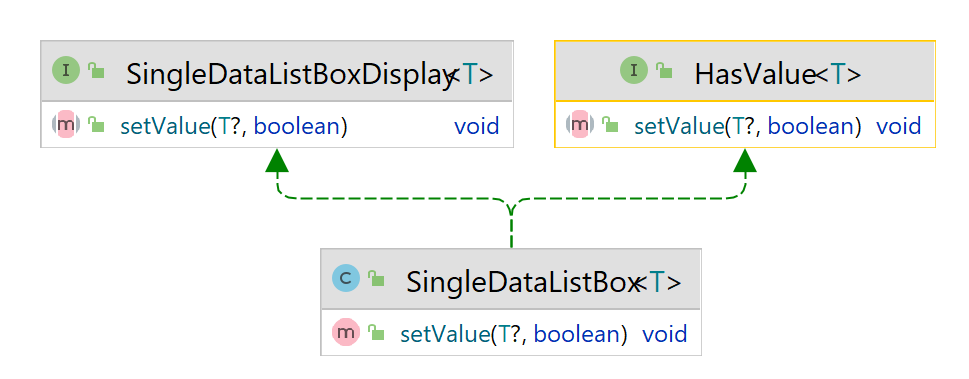
-
SingleDataListBox implements two interfaces, both of which declare the same method and the same method signature. Now when you override the
setValue() method,
in the
SingleDataListBox class,
the method from which of the two interfaces has been implemented? Both of them actually. Because from the compiler's perspective they are the same method. And there should be
a single implementation for both of them. That is, there is only one
@Override that will be necessary. The two methods have become 'override-equivalent'. Whether
you treat the
SingleDataListBox as a
HasValue type, or a
SingleDataListBoxDisplay type, there is only one method to invoke.
What happens if a class extends a class and implements another interface but does not define some method in the interface
- Consider the following example.
SingleDataListBox implements
SingleDataListBoxDisplay but does not define the method
String getItemText(int). The
implementation of that method comes from the
DecoratedListBox that the
SingleDataListBox extends.
- The class diagram looks like follows:
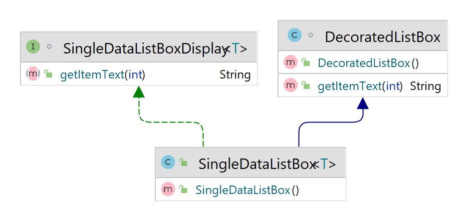
- The code will look like follows:
Expand Gist
Using static methods in an interface
- Another capability added to interface by JDK 8 is the ability to define one or more static
methods. Like static methods in a class, a static method defined by an interface
can be called independently of any object. Thus, no implementation of the interface is necessary, and no
instance of the interface is required, in order to call a static method. Instead, a static method is called
by specifying the interface name, followed by a period, followed by the method name.
- static interface methods are not inherited by either an implementing class or a subinterface.
Private interface methods
- Beginning with JDK 9, an interface can include a private method. A private interface method can be called
only by a default method or another private method defined by the same interface. Because a private
interface method is specified private, it cannot be used by code outside the interface in which it is
defined. This restriction includes subinterfaces because a private interface method is not inherited by a
subinterface.
- The key benefit of a private interface method is that it lets two or more default methods use a common
piece of code, thus avoiding code duplication.
Remember that all Collections can store ONLY references. Not values of primitive types.
Source
of UML Diagram
1) The Array List
UML Diagram
- ArrayList has 3 constructors:
a)
ArrayList(): Builds an empty Array List
b)
ArrayList(Collection<? extends E> c): Builds an Array List that is initialized with
the
elements of the Collection c in the order they are returned by the collection's iterator.
c)
ArrayList(int capacity): Builds an array list that has the specified initial capacity.
The
capacity is the size of the
underlying array that is used to store the elements. The capacity grows automatically as elements are
added to the array list.
You can increase the capacity of an ArrayList object manually by calling
ensureCapacity()
Difference between capacity and size of an Array List
Expand Gist
So what
is going on?
ensureCapacity doesn't change the logical size of an ArrayList - it changes the
capacity,
which is the size the list can reach
before it next needs to copy values. You need to be very aware of the difference between a logical size
(i.e. all the
values in the range [0, size) are accessible, and adding a new element will add it at index size) and
the capacity
which is more of an implementation detail really - it's the size of the backing array used for storage.
Calling
ensureCapacity should only ever make any difference in terms of performance (by
avoiding
excessive copying) -
it doesn't affect the logical model of what's in the list, if you see what I mean.
Expand Gist
void trimToSize(): This will reduce the size of the array that underlies an
ArrayList
object so that it is
precisely as large as the number of items that it is currently holding.
So, there is another question:
what happens if you call
trimToSize after you have called
ensureCapacity? Yes,
it will
trim the size of the ArrayList to
the size of the current number of elements in the ArrayList. It will not care about the capacity.
//TODO: Is there some way that we can check the underlying size of the array that is being used for the
Array List?
Obtaining an Array from an ArrayList
When working with an ArrayList you will sometimes want to obtain an actual array that contains the
contents of the list.
You can do this by calling the
toArray(), which is defined by
Collection. The
returned
array will be "safe" in
that no references to it are maintained by this list. (In other words, this method must allocate a new
array).
The caller is thus free to modify the returned array.
But
be careful while using the
toArray method. it produces a
ClassCastException.
Expand Gist
In fact, even if you try to do it with objects, it still produces the same Exception
Expand Gist
2) The Linked List
UML Diagram
The Linked List has 2 constructors:
a)
LinkedList(): The first constructor builds an empty linked list.
b)
LinkedList(Collection<? extends E> c): The second constructor builds a linked list
that is initialized with the elements of the Collection c.
Linked List vs Array List
From memory standpoint:
- Individual elements stored in a LinkedList takes more space than an ArrayList as LinkedList also needs
to store the node information.
To be clear, even in the worst case, ArrayList is 4x smaller than a LinkedList with the same elements.
In short, it's basically impossible
to make LinkedList win the memory comparison, and if you care about space, then calling
trimToSize() on the ArrayList will instantly
make ArrayList win again by a huge margin.
Seriously.
ArrayList wins.
- For a linked list, each node occupies AT LEAST 3 times the number of entries, because each node has a
next and prev reference as well as the entry reference.
(And in fact, it is more than 3 times, because of the space used by the nodes' object headers and
padding. Depending on the JVM and pointer size,
it can be as much as 6 times.) The only situation where a linked list will use less space than an array
list is if
you badly over-estimate the array list's initial capacity. (And for very small lists ...).
When you think about it, the only real advantage linked lists have over array lists is when you are
inserting and removing elements.
Even then, it depends on how you do it.
- Also, as far as I can tell
memory
for an ArrayList is not allotted contiguously(?).
ArrayList stores "references" or "pointers" to actual storage in an internal object array elementData.
This array of references may well be contiguous,
but is JVM specific. The actual objects being added are stored on the heap, and almost certainly won't
be contiguous, although this is JVM specific.
From Speed Standpoint:
- Prefer ArrayList if you want O(1) random access. LinkedList gives O(1)
Iterator.remove
time.
This is different from plain old
remove(int index)
which still takes O(n) time for LinkedLists in
worst-case
scenario.
-
Good comment about pre-emptively trying to
improve performance without understanding what is going on.
-
Post
about difference between Collection.remove and Iterator.remove
3) The HashSet Class
UML Diagram
HashSet extends
AbstractSet and implements the
Set interface. It
creates a collection
that uses a hash table for storage.
HashSet is a generic class that has this declaration:
class HashSet<E>.
- This class implements the
Set interface, backed by a hash table (actually a
HashMap
instance). It makes no guarantees as to the iteration order of the set;
in particular, it does not guarantee that the order will remain constant over time. This class permits the
null element.
This class offers constant time performance for the basic operations (
add,
remove,
contains and
size),
assuming the hash function disperses the elements properly
among the buckets.
- Iterating over this set requires time proportional to the sum of the HashSet instance's size (the number
of elements) plus the "capacity" of the backing
HashMap instance (the number of buckets). Thus, it's very important not to set the initial
capacity
too high (or the load factor too low) if iteration performance is important.
The following constructors are defined:
a)
HashSet(): Constructs a new, empty set; the backing HashMap instance has default initial
capacity
(16) and load factor (0.75).
b)
HashSet(Collection<? extends E> c): Initializes the hash set by using the elements of
c.
c)
HashSet(int capacity): Constructs a new, empty set; the backing HashMap instance has the
specified
initial capacity and default load factor (0.75).
d)
HashSet(int capacity, float loadFactor): Constructs a new, empty set; the backing HashMap
instance
has the specified initial capacity and the specified load factor (also called fillRatio)
4) The LinkedHashSet Class
UML Diagram
The
LinkedHashSet class extends
HashSet and adds no members of its own. It is a
generic class
that has this declaration:
class LinkedHashSet<E>. Here,
E specifies the type of objects that the set
will hold. Its
constructors parallel those in HashSet. Hash table and
linked list implementation of the Set interface, with predictable iteration order. This implementation
differs from HashSet in that it maintains a doubly-linked
list running through all of its entries. This linked list defines the iteration ordering, which is the order
in which elements were inserted into the set (insertion-order).
Note that insertion order is not affected if an element is re-inserted into the set.
(//TODO: But this should again run into the same problem that happens when we compare Linked List vs Array
List. Linked Lists take way more memory. So I think LinkedHashSet should also end up taking an enormous
chunk of memory )
Like HashSet, it provides constant-time performance for the basic operations (
add,
remove,
contains and
size),
assuming the hash function disperses elements properly
among the buckets.
- Performance is likely to be just slightly below that of HashSet, due to the added expense
of maintaining the linked list, with one exception:
Iteration over a LinkedHashSet requires time proportional to the
size of the set, regardless of
its
capacity. Iteration over a HashSet is
likely to be more expensive, requiring time proportional to its capacity. This implementation spares its
clients from the unspecified, generally chaotic
ordering provided by HashSet, without incurring the increased cost associated with
TreeSet.
Linked Hash Set has 4 Constructors:
a)
LinkedHashSet(): Constructs a new, empty linked hash set with the default initial capacity
(16) and load
factor (0.75).
b)
LinkedHashSet(int initialCapacity): Constructs a new, empty linked hash set with the
specified initial capacity and the default load factor (0.75).
c)
LinkedHashSet(int initialCapacity, float loadFactor): Constructs a new, empty linked hash
set with the
specified initial capacity and load factor.
d)
LinkedHashSet(Collection<? extends E> c): Constructs a new linked hash set with the
same elements as
the specified collection.
5) The TreeSet Class
UML Diagram
A
NavigableSet implementation based on a
TreeMap. The elements are ordered using
their natural
ordering, or by a
Comparator provided at
set creation time, depending on which constructor is used. This implementation provides guaranteed
log(n) time cost for the basic operations (
add,
remove and
contains).
Note that the ordering maintained by a set (whether or not an explicit comparator is provided) must be
consistent
with equals if it is to correctly implement
the
Set interface. (See
Comparable or
Comparator for a precise definition
of consistent
with equals.) This is so because the
Set
interface is defined in terms of the equals operation, but a
TreeSet instance performs all
element
comparisons using its
compareTo (or
compare) method,
so two elements that are deemed equal by this method are, from the standpoint of the set, equal. The
behavior of a set is well-defined even if its ordering is
inconsistent with equals; it just fails to obey the general contract of the Set interface.
TreeSet has the following Constructors:
a)
TreeSet(): Constructs a new, empty tree set, sorted in ascending order according to the
natural ordering
of its elements.
b)
TreeSet(Collection< extends E> c) : Constructs a new tree set containing the elements
in the
specified collection, sorted according to the natural ordering of its elements.
c)
TreeSet(Comparator<? super E> comparator): Constructs a new, empty tree set, sorted
according to the
specified comparator.
d)
TreeSet(SortedSet<E> s): Constructs a new tree set containing the same elements and
using the same
ordering as the specified sorted set.
6) Priority Queue Class
7) Array Deque Class
Accessing a Collection via an Iterator
UML Diagram
- Iterators allow you to cycle through the elements in a collection.
iterator allows you to
cycle through a collection, obtaining and removing elements.
ListIterator extends
Iterator
to
allow bi-directional traversal of a list, and the modification of elements.
- The
Iterator and the
ListIterator are generic interfaces:
interface Iterator <E>
interface ListIterator <E>
Here
E specifies the type of object being iterated.
Using an Iterator
Before you can access a collection through an iterator, you must obtain one. Each of the collection classes
provides an
iterator() method that returns an iterator to the start of the collection. By using this
iterator
object, you can access each element
in the collection, one element at a time. In general, to use an iterator to cycle through the contents of a
collection, follow these steps:
1. Obtain an iterator to the start of the collection by calling the collection's iterator()
method.
2. Set up a loop that makes a call to hasNext(). Have the loop iterate as long as hasNext()
returns true.
3. Within the loop, obtain each element by calling next().
For collections that implement List, you can also obtain an iterator by calling listIterator().
A list iterator gives you the ability to access the collection in either the forward or backward direction
and lets you modify an element.
Otherwise, ListIterator is used just like Iterator.
For-Each Alternative to Iterators
- Can only be used ot cycle through a collection in the forward direction
- You cannot modify the contents of a collection using for-each loop
The RandomAccess Interface
-//TODO
Working with Maps
UML Diagram
- A
map is an object that stores associations between keys and values, or
key/value pairs.
Given a key, you can find its value.
Both keys and values are objects. The keys must be unique, but the values may be duplicated. Some maps can
accept a null key and null values, others cannot.
-
Map is generic and is declared as shown here:
interface Map <K, V>
Here
K specifies the types of keys, and
V specifies the types of values.
- There is one key point about maps that is important to mention at the outset: they don't implement the
Iterable
interface.
This means that you cannot cycle through a map using a for-each style for loop. Furthermore, you can't
obtain an iterator to a map.
However, you can obtain a collection-view of a map, which does allow the use of either the for loop or an
iterator.
- The Map interface provides three
collection views:
a)
Set<Map.Entry<K,V>> entrySet(): Returns a
Set view of the mappings
contained in this
map. The
set is backed by the map, so changes to the map are reflected in the set, and vice-versa. If the map is
modified while an iteration over the set is in progress (except through the iterator's own remove()
operation,
or through the setValue() operation on a map entry
returned by the iterator) the results of the iteration are undefined. The set supports element removal,
which removes the corresponding mapping from the map, via the Iterator.remove, Set.remove, removeAll,
retainAll and clear operations. It does not support the add or addAll operations.
b)
Set<K> keySet(): Returns a
Set view of the keys contained in this map.
c)
Collection<V> values(): Returns a
Collection view of the values contained
in this map.
What's up with the 3 different return types?
You should be careful about not changing the map while you are iterating over it. Read what it means to
"change" the map on these SO links
here
and
here.
You can never change a key value in a map.
Expand Gist
- The
order of a map is defined as the order in which the iterators on the map's collection views
return their elements.
Some map implementations, like the
TreeMap class, make specific guarantees as to their order;
others,
like the
HashMap class, do not.
- Note: great care must be exercised if mutable objects are used as map keys. The behavior of a map is not
specified if the value of an object is
changed in a manner that affects
equals comparisons while the object is a key in the map. A
special
case of this prohibition is that it is
not permissible for a map to contain itself as a key. While it is permissible for a map to contain itself as
a value, extreme caution is advised:
the
equals and
hashCode methods are no longer well defined on such a map.
- To put a value into a map, use
put(K key, V value) specifying the key and the value.
get(Object key) returns the value to which the specified key is mapped, or null if this map
contains
no mapping for the key.
The SortedMap Interface
UML Diagram
- The
SortedMap interface extends
Map. It ensures that entries are maintained in
the ascending
order according to their keys.
- The map is ordered according to the natural ordering of its keys, or by a
Comparator
typically
provided at sorted map creation time.
This order is reflected when iterating over the sorted map's collection views (returned by the
entrySet(),
keySet() and
values() methods).
(This interface is the map analogue of SortedSet.)
-
SortedMap is generic and is declared here:
interface SortedMap<K, V>. Here
K specifies the type of keys, and
V specifies the type of values.
- All keys inserted into a sorted map must implement the
Comparable interface (or be accepted
by the
specified comparator).
Furthermore, all such keys must be mutually comparable:
k1.compareTo(k2) (or
comparator.compare(k1,
k2)) must not throw a
ClassCastException for any keys k1 and k2 in the sorted map.
- Sorted maps allow very efficient manipulations of submaps (in other words, subsets of a map). To obtain a
submap, use
headMap(),
tailMap(), or
subMap(). The submap returned by these
methods is backed by
the invoking map.
Changing one changes the other. To get the first key in the set, call
firstKey(). To get the
last
key, use
lastKey().
The NavigableMap Interface
UML Diagram
The NavigableMap interface extends
SortedMap and declares the behavior of a map that supports
the
retrieval of entries based on the closest match to a given key or keys.
-
NavigableMap is a generic interface that has
this declaration:
interface NavigableMap<K,V>. Here,
K specifies the type of
the
keys, and
V specifies the type of the values associated with the keys.
The Map.Entry Interface
UML Diagram
- The
Map.Entry interface enables you to work with a map entry. For example, recall that the
entrySet()
method declared by the
Map interface returns a
Set containing the map entries.
Each of these
set elements is a
Map.Entry object.
-
Map.Entry is generic and is declared like this:
interface Map.Entry<K, V>.
Here
K
specifies the type of keys, and
V specifies the type of Values.
- Map.Entry is a key and its value combined into one class. This allows you to iterate over
Map.entrySet()
instead of having to iterate over
Map.keySet(), then getting the value for each key.
- Some SO posts on how to do this:
How to iterate over a HashMap:
Map.Entry: How to use it?
Map.Entry interface in java
Expand Gist
How do we remove a <key, value> pair
Expand Gist
How to create a new Entry(K, V) object
Java - How to
create new Entry (key, value)
As of Java 9, if you want to create an immutable entry, you can use the
Map.entry() method.
//TODO: Can you add the created entry back to a Hash Map without unpackaging the entry by using
entry.getKey() and
entry.getValue()
Expand Gist
If you want to create a mutable entry, in that case you will use
AbstractMap.SimpleEntry
Expand Gist
The Map Classes
UML Diagram
AbstractMap is a superclass for all concrete Map implementations. The concrete implementations
are the following
1) The HashMap Class
UML Diagram
The
HashMap class extends
AbstractMap and implements the
Map
interface. It uses a hash table to store the map. This allows the execution time of
get() and
put() to remain constant even for large sets. Remember that the
put() method
automatically replaces any preexisting value that is associated with the specified key with the new value.
HashMap is a generic class that has this declaration:
class HashMap<K, V>. Here
K specifies the type of the key, and
Vspecifies
the type of the Value.
The following Constructors are defined:
a)
HashMap: Constructs a default Hash Map
b)
HashMap(Map <? extends K, ? extends V > m): Initializes the Hash Map by using the
elements of m
c)
HashMpa(int capacity): Initializes the capacity of the Hash map to
capacity.
d)
HashMap(int capacity, float fillRatio): Initializes both the
capacity and the
fillRatio
by using the arguments.
2) The TreeMap Class
UML Diagram
The
TreeMap class extends
AbstractMap and implements the
NavigableMap
interface. It creates maps stored in a tree structure. A
TreeMap provides an efficient means of
storing
key/value pairs in sorted order and allows rapid retrieval. You should note that, unlike a hash map, a tree
map guarantees that its elements will be sorted in ascending key order.
TreeMap is a generic
class that has
this declaration:
class TreeMap<K, V> Here,
K specifies the type of keys, and
V specifies the type of values.
The
TreeMap constructors are:
a)
TreeMap: Constructs an empty tree map that will be sorted by using the natural order of its
keys.
b)
TreeMap(Comparator <? super K> comp): Constructs an empty tree-based map that will be
sorted by using the
Comparator comp.
c)
TreeMap(Map <? extends K, ? extends V > m): Initializes a tree map with the entries
from
m, which will be sorted by using the natural order of the keys.
d)
TreeMap(SortedMap <K, ? extends V > sm): Initializes a tree map with the entries from
sm, which will be sorted in the same order as
sm.
Notice that
TreeMap sorts the keys. However, in this case, they are sorted by first name
instead of last name. You can alter this behavior by specifying a comparator when the map is created.
3) The LinkedHashMap Class
UML Diagram
LinkedHashMap extends
HashMap. It maintains a linked list of the entries in the
map, in the order in which they were inserted. This allows insertion-order iteration over the map. That is,
when iterating through a collection-view of a
LinkedHashMap, the elements will be returned in
the order in
which they were inserted. You can also create a
LinkedHashMap that returns its elements in the
order in
which they were last accessed.
LinkedHashMap is a generic class that has this declaration:
class LinkedHashMap<K,V>.
Here,
K specifies the type of keys, and
V specifies the type of values.
LinkedHashMap defines the following constructors:
a)
LinkedHashMap(): Constructs a default Linked Hash Map
b)
LinkedHashMap(Map<? extends K, ? extends V> m): initializes the LinkedHashMap with the
elements from
m.
c)
LinkedHashMap(int capacity): initializes the capacity.
d)
LinkedHashMap(int capacity, float fillRatio): initializes both capacity and fill ratio. The
meaning of capacity and fill ratio are the same as for HashMap. The default capacity is 16. The default
ratio is 0.75.
e)
LinkedHashMap(int capacity, float fillRatio, boolean Order): allows you to specify whether
the elements will be stored in the linked list by insertion order, or by order of last access. If
Order is
true, then access order is used. If
Order is false, then insertion order is used.
Comparators
//TODO........................
- Collections are designed to work only with objects. To work with collections of primitive types, either you wrap and unwrap your primitive values in wrapper objects or
you can take advantage of the built-in autoboxing features in Java that will wrap and unwrap the primitive values as needed.
- All collection classes in Java are declared generic. That is, you can specify the type of elements that your collection deals with as the type parameter.
- Class diagram for most of the interfaces in the Collections FrameWork
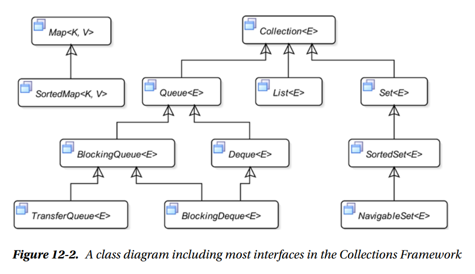
The Collection Interface
- The
Collection interface is the root of the collection interface hierarchy. It defines a generic collection. The Collections Framework does not provide
an implementation for the Collection interface.
- This is the most generic type of collection. You can use it as an argument type in methods, where you do not care about the collection type of the argument, provided
it isn't a map.
- Note the
add() and the
remove() methods in the
Collection interface. Both of them return true if calling them on the collection
ended up changing the collection. Otherwise they return false. For eg, in the case of a
Set trying to add an element that already exists in the set is
going to return false. Similarly, trying to remove an element from a collection that does not exist returns false.
- We need a way to bridge the gap between array and Collections. We need a way to easily convert
Foo[] to
Collection<Foo>. There are two ways to
accomplish this, as shown in
this answer on SO.
a) Converting a
Collection to an
array: you can use the
toArray method provided in the
Collection interface to convert the collection into an array.
Foo[] foos = fooCollection.toArray(new Foo[0]); // before JDK 11
Foo[] updatedFoos = fooCollection.toArray(Foo[]::new); // after JDK 11
b) Converting an
array to a
Collection: There is no method on the
Collection interface to directly convert arrays into
collections. Instead you will have to do this individually for the specific collection that you are trying to obtain.
List<Foos> fooList = new ArrayList<>(Arrays.asList(fooArray))
Set<Foos> fooSet = new HashSet<>(Arrays.asList(fooArray))
The exception to the rule here is that you cannot convert an array of a primitive type directly to a collection. You will have to iterate over each element.
- There is also the
Collections Utility class that offers multiple methods for performing operations on different types of
Collection and
Map. Read about that on the
other page here.
Traversing Collections
- The
Iterator is the fundamental (and a little cumbersome) way of iterating over elements of a collection. It has existed since the beginning. All other
ways, such as the for-each loop, the
forEach() method, and the
forEachRemaining() method, are syntactic sugar for the
Iterator.
Internally, they all use an
Iterator.
a) Using an Iterator
:
- A collection provides an iterator to iterate over all its elements. Sometimes an iterator is also known as a
generator or a
cursor.
- An iterator lets you perform the following three operations on a collection:
i) Check if there are elements that have not been yet accessed using this iterator.
ii) Access the next element in the collection.
iii) Remove the last accessed element of the collection.
- Note that you cannot add elements to a collection using the
Iterator interface, only remove elements. If you want to add elements as well, you can do it
with a
ListIterator interface (obviously, this will work only with lists).
- The meaning of the term "next element" of a collection depends on the collection type. The iterator itself does not impose any ordering in which it returns the
elements from a collection. However, if the collection imposes ordering on its elements, the iterator will maintain the same ordering. In general, the "next element"
means any element in the collection that has not been returned by this iterator yet.
- The
remove() method removes the element of the collection that was returned last time by calling the
next() method of the iterator. The
remove() method can be called only once per call to the
next() method. If the
remove() method is called more than once per
next()
method call or before the first call to the
next() method, it throws an
IllegalStateException. The support for the
remove()
method is optional. Calling the
remove() method of an iterator may throw an
UnsupportedOperationException if the iterator does not support the
remove operation.
- The Collections Framework supports fast-fail concurrent iterators. You can obtain multiple iterators for a collection and all of them can be used to iterate over the
same collection concurrently. If the collection is modified by any means, except using the
remove() method of the same iterator after the iterator is
obtained, the attempt to access the next element using the iterator will throw a
ConcurrentModificationException. It means that you can have multiple
iterators for a collection; however, all iterators must be accessing (reading) elements of the collection. If any of the iterators modify the collection using its
remove() method, the iterator that modifies the collection will be fine and all other iterators will fail. If the collection is modified outside of all
iterators, all iterators will fail.
Expand Gist
b) Using a for-each loop
:
- The for-each loop is not a replacement for using an iterator.
- The for-each loop has several limitations. You cannot use the for-each loop to remove elements from the collection. Another limitation of the for-each loop is that
you
must traverse from the first element to the last element of the collection. It provides no way to start from middle of the collection. The for-each loop provides no way
to
visit the previously visited elements, which is allowed by the iterator of some collection types such as lists.
c) Using a forEach() method
:
- The forEach() method is available in all collection types that inherit from the Collection interface.
- Remember that the args of the
forEach requires a
Consumer.
Working with Sets
- Java allows at most one
null element in a Set because one null element is still distinguishable from all other non-null elements and thus, it is unique.
- Go through the basics of
Set explained here on the other page.
- Sometimes when you pass your Set to another method as an args, you may not want that method to modify your set in any way. In this case you can do the following:
Expand Gist
Using the SortedSet interface
- A sorted set is a set that imposes ordering on its elements. An instance of the SortedSet interface represents a sorted set.
- The elements in a
SortedSet can be sorted in a natural order or using a
Comparator. A
SortedSet must know how to sort its
elements as they are added. The sorted set relies on two things to sort its elements:
a) If its elements implement the
Comparable interface, it will use the
compareTo() method of elements to sort them. This is called sorting in
natural order.
b) You can supply a
Comparator object to use a custom sorting. The implementation class for
SortedSet is recommended to provide a constructor
that will accept a
Comparator object to use a custom sorting. If a
Comparator is specified, the
Comparator is used for sorting
irrespective of the elements implementing the
Comparable interface.
- What would happen if the class of the elements of a
SortedSet does not implement the
Comparable interface and you don't supply a
Comparator
object? The answer is that, in such cases, you cannot add any elements to a
SortedSet. Attempting to add an element results in a
ClassCastException.
- The
TreeSet class is one of the predefined implementation classes for the
SortedSet interface in the Collections Framework.
- Read through the behavior of the
TreeSet when we try to store
Strings into it and also pass in a custom
Comparator of our own
here on the other page.
Expand Gist
- How is a
null element stored in a
SortedSet? If a
SortedSet uses natural order (uses the
Comparable interface's
compareTo() method), adding a
null element will throw a
NullPointerException. If you use a
Comparator object to
apply the ordering, it is up to you to allow a null element in the
SortedSet. If you allow a null element in the
SortedSet, you can decide
whether the null element will be placed in the beginning or at the end of the Set.
- There is a separate method in the
Comparator interface that can place nulls at the start or end as per your requirement:
nullsFirst or
nullsLast. Usage shown in above code
example.
Using the NavigableSet interface
- A navigable set is a specialized type sorted set that lets you work with its subsets in a variety of ways. (emphasize again that this will also sort the contents like
a
SortedSet does).
- The
NavigableSet interface inherits from the
SortedSet interface and defines some additional methods to extend the functionality provided by
the
SortedSet. It extends
SortedSet in four ways:
a) It lets you navigate the set in reverse order. The reverse order is the opposite order in which your
SortedSet would be sorted normally. Its
descendingSet() method returns a
NavigableSet object, which is another view of the same
NavigableSet in the reverse order. If you
modify the original
NavigableSet or the one returned from the
descendingSet() method, the modifications will be reflected in both sets.
b) It adds another version of the three methods
headSet(),
tailSet(), and
subSet() in
SortedSet, which accept a
boolean flag to include the element at the beginning or the end of the subset boundary.
c) It provides four methods,
lower(),
floor(),
higher(), and
ceiling(), that are used to search for an element based
on search criteria. The
lower() method returns the greatest element in the
NavigableSet that is less than the specified element. The
floor()
method is similar to the
lower() method that returns the greatest element in the
NavigableSet that is less than or equal to the specified
element. The
higher() method returns the least element in the
NavigableSet that is greater than the specified element. The
ceiling() method is similar to the
higher() method that returns the least element in the
NavigableSet that is greater than or
equal to a specified element.
d) It provides two methods,
pollFirst() and
pollLast(), that retrieve and remove the first and the last element of the
NavigableSet, respectively. If the
NavigableSet is empty, they return null.
- The
TreeSet class is one of the implementation classes for the
NavigableSet interface. Since a
NavigableSet is also a
SortedSet and a
SortedSet is also a
Set, you can use an object of
TreeSet as a set, a sorted set, and a navigable
set.
Expand Gist
Working with Lists
- Read the basics of operations that can be performed on a list
here on the other page.
- A
List lets you iterate over its elements using a specialized iterator represented by an instance of the
ListIterator interface. The
ListIterator interface inherits the
Iterator interface; it adds a few more methods to give you access to elements in the list from the current
position in the backward direction.
-
List has two implementations that are primarily used:
LinkedList and
ArrayList. Note that for the
LinkedList, the
list is implemented as a Doubly-Linked list. What this means is that fetching the last element is also going to take O(1) time and not O(n). In general, operations that
index into the list will traverse the list from the beginning or the end, whichever is closer to the specified index. (
Source on Oracle Docs).
Working with Queues
- A queue has two ends known as head and tail. In the simple queue, objects are added to the tail and removed from the head; the object added first will be removed
first.
- Remember that
Queue extends the
Collection interface. So all of the methods in the
Collection interface can also be accessed in
the
Queue interface as well. Things like
isEmpty for example.
- Queues can be categorized based on the way it allows insertion and removal of its elements:
a) Simple Queue: allows insertion at the tail and removal from the head.
b) Priority Queue: associates a priority with every element of the queue and allows the element with the highest priority to be removed next from the queue.
c) Delay Queue: associates a delay with every element of the queue and allows for the removal of the element only when its delay has elapsed.
d) Doubly-Ended Queue: allows for insertion and removal of its elements from the head as well as the tail.
e) Blocking Queue: blocks the thread that adds elements to it when it is full and it blocks the thread removing elements from it when it is empty.
f) Transfer Queue: a special type of blocking queue where a handoff of an object occurs between two threads (a producer and a consumer).
g) Blocking Doubly Ended Queue: combination of a doubly ended queue and a blocking queue.
- The
Queue interface itself has 3 implementations that you can use depending on your requirement:
Expand Gist
Simple Queues
- Although the
Deque interface also allows us to define a Queue, we should use the
Queue interface to create a queue. For a stack you should
prefer the
Deque interface over the
Stack class (
Source on Oracle
Docs)
- Simple queues are represented by an instance of the
Queue interface. Objects are added to the tail and removed from the head. FIFO.
- Typically, a
null element does not make sense in a
Queue. After all, the purpose of having a queue is to apply some processing logic on its
elements or use the elements to perform some logic. In either case, a
null value does not make sense. It is up to the implementation of the
Queue interface to allow or disallow
null values. The use of
null elements in a queue is not recommended. If you use
null elements in a queue, you will not be able to distinguish between the
null value returned from its method to indicate a special situation
and the
null value of the element.
- There are two implementations of the
Queue interface that can be used as a simple queue - FIFO operations basically. These are
LinkedList
and
ArrayDeque. You should prefer the
ArrayDeque implementation instead of the
LinkedList one. Reasons are present on the
following SO links:
Why is ArrayDeque better than LinkedList,
What is the fastest Java collection
with the basic functionality of a Queue?
- A queue lets you perform 3 basic operations:
a) Add an element to its tail
b) Remove an element from its head
c) Peek the element at the head
- The
Queue interface defines two methods for each of these operations. One method throws an exception if the operation is not possible; the other method
returns a value (
false or
null) to indicate the failure.
| Category |
Method |
Description |
| Adding an element to the queue |
boolean add(E e) |
Adds an element to the queue if it is possible. Otherwise, it throws an exception. |
| Adding an element to the queue |
boolean offer(E e) |
Adds an element to the queue without throwing an exception if the element cannot not be added. It returns false on failure and
true on success. It is the preferred way to add an element in a bounded queue
|
| Removing an element from the queue |
E remove() |
Retrieves and removes the head of the queue. It throws an exception if the queue is empty. |
| Removing an element from the queue |
E poll() |
Performs the same job as the remove() method. However, it returns null if the queue is empty instead of throwing an exception.
|
| Peeking at the head of the queue |
E element() |
Retrieves the head of the queue without removing it from the queue. It throws an exception if the queue is empty.
|
| Peeking at the head of the queue |
E peek() |
Performs the same job as the element() method. However, it returns null if the queue is empty instead of throwing an exception.
|
Priority Queue
-
PriorityQueue is another implementation of the
Queue interface. In a priority queue, each element is associated with a priority. The element
with the highest priority is removed next from the queue. But what is "highest priority"? The head of this queue is the
least element with respect to the
specified ordering. If multiple elements are tied for least value, the head is one of those elements -- ties are broken arbitrarily.
- You can use the natural order of the elements in the queue as a priority. In that case, the elements should implement the
Comparable interface.
- You can also supply a
Comparator object, which will determine the priority of the elements. You can read about how to make use of
Comparable
and
Comparator here on the other page.
- In the output of the below code, note that the elements within the Priority Queue are not in any specific order. The only guarantee is that the call to
peek or
remove is going to return the correct element based on the priority that you have specified. The
PriorityQueue class does
not guarantee any ordering of the elements when you use an iterator.
Expand Gist
- Implementation note: this implementation provides O(log(n)) time for the enqueuing and dequeuing methods (offer, add, poll, remove()); linear time for the
remove(Object) and contains(Object) methods; and constant time for the retrieval methods (peek, element, and size). (
Source on Oracle Docs)
Double-Ended Queue
- A doubly ended queue or deque is an extended version of a queue to allow insertion and removal of elements from both ends (the head and the tail).
- There are some new methods that are offered by the
Deque interface to facilitate insertion, removal, and peeking at either end (head or tail) of a
Deque. In the method names, first means head and last means tail.
| Category |
Method |
Description |
| Adding an element to the Deque |
void addFirst(E)
void addLast(E) |
The addXxx() methods add an element at the head or tail, and they throw an exception if an element cannot be added, such as in a full bounded Deque.
|
| Adding an element to the Deque |
boolean offerFirst(E e)
boolean offerLast(E e) |
The offerXxx() methods work the same way as the addXxx() methods. However, they do not throw an exception on failure. Rather, they return
false if the specified element cannot be added to a Deque.
|
| Removing an element from the Deque |
E removeFirst()
E removeLast() |
The removeXxx() methods retrieve and remove the element from the head or tail of the Deque. They throw an exception if the Deque is
empty.
|
| Removing an element from the Deque |
E pollFirst()
E pollLast() |
The pollXxx() methods perform the same job as the removeXxx() methods. However, they return null if the Deque is empty.
|
| Peeking at the end of the Deque |
E getFirst()
E getLast() |
The getXxx() methods retrieve without removing the element at the head or the tail of the Deque. They throw an exception if the Deque is empty
|
| Peeking at the end of the Deque |
E peekFirst()
E peekLast() |
The peekXxx() methods perform the same job as the getXxx() methods. However, they return null if the Deque is empty instead of
throwing an exception.
|
- A
Deque inherits from the
Queue interface which allows it to work as a FIFO Queue. You can also use a Deque as a stack (a LIFO queue). Below
we will look at methods that we should use when we are using the
Deque interface as a queue and as a stack respectively.
Using a Deque as a Queue:
| Method in Queue |
Equivalent method in Deque |
| add(e) |
addLast(e) |
| offer(e) |
offerLast(e) |
| remove() |
removeFirst() |
| poll() |
pollFirst() |
| element() |
getFirst() |
| peek() |
peekFirst() |
Using a Deque as a Stack:
- A stack needs four methods to perform its operations: isEmpty(), push(), pop() and peek().
| Stack Specific Methods in Deque |
Equivalent Alternate Methods in Deque |
| isEmpty |
Inherited from the Collection interface |
| push(E e) |
addFirst(E e) |
| pop() |
removeFirst() |
| peek() |
peekFirst() |
Example of using a Deque as a Queue and as a Stack:
Expand Gist
Creating Different Views of a Collection
- // TODO
Read-Only Views of Collections
- You can get a read-only view (also called unmodifiable view) of a collection. This is useful when you want to pass around your collection to other methods and you do
not want the called method to modify your collection. In such cases, you need to pass a read-only view of your collection to those methods.
Expand Gist
Creating Empty Collections
- Sometimes you need to call a method that accepts a collection. However, you do not have any elements for the collection to pass. In such cases, you do not need to go
through the hassle of creating a collection object. The Collections class provides an immutable empty collection object of each type as a return value of its static
methods.
- You can return these datastructures instead of returning
null or you can pass these into a method that needs one of these datastructures. The size of all
these is going to be 0. Also, all of these are immutable. So the method to which you will be passing these to won't be able to make any changes to them.
Expand Gist
Creating Singleton Collections
- Sometimes you want to create a collection that needs to have one and only one element in it. This kind of situation arises when a method accepts a collection as its
argument and you have only one object to pass to that method. Instead of going through the hassle of creating a new collection and adding a lone element to it, you can
use one of the three static methods of the Collections class, which will create an
immutable collection with the one specified element.
Expand Gist
Understanding Hash-Based Collections
- Two methods in the
Object class are central to the working of hash-based collections. Those methods are
equals() and
hashCode().
- Hash-based collections maintain a number of buckets to store objects. When you add an object to a hash-based collection, Java gets the hash code value of the object
by calling object's
hashCode() method. Then, it applies an algorithm to the hash code value to compute the bucket in which the object should be placed.
When you want to check if an object exists in a hash-based collection, Java applies the same logic to compute the bucket in which the object might have been placed. It
calls the
hashCode() method of the object and applies some algorithm to computethe bucket in which it might have been placed. Then, it uses the
equals() method of the object to compare the object with existing objects in the bucket to check if the object exists in that bucket.
- It is easy to screw-up the implementation of the
hashCode() and the
equals() method. Below is an example of how NOT to implement these
methods.
- The problem with the below class is that it is a
mutable class. You can modify the
id field of the class by calling the
setId method. And you are
using the same
id field to calculate the hash code of the object as well. Hence if you mutate the id field after you have added the object to a hash-based DS
like HashSet and then check for
contains, you are going to get false. Because when you stored the object into the Hash Set, the bucket was calculated using
the hash code, and the hash code was in turn calculated using the
id field which was 300. But then you changed the
id field to 200. So now when you check
for
contains, the bucket number to check for the existence of the object will be calculated based on the
new hash code that has been calculated
using the mutated
id field value of 200. And sure enough the Hash Set is NOT going to find the object in that particular bucket, and it is going to return false
as a result of that.
Expand Gist
- Note that in the auto-generated
hashCode method, there are two different methods that can be used for calculating the hash code of an object
Objects.hash() and
Objects.hashCode(). There is also a third method that can be used for calculating the hash code of an object, and that is
by calling the
hashCode() method directly on the object reference itself, as in
int hc = myObject.hashCode().
- So what is the difference between the 3 methods? Read
here on SO. Basically:
a)
Objects.hash(Object... values) should be used in cases when you want a hash of a sequence of objects, e.g. when defining your own hashCode method and
want a simply-coded hash for multiple values that make up the identity of your object.
b)
Objects.hashCode(Object o) should be used when you want the hash of a single object, without throwing NPE if the object is null.
c)
Object::hashCode() should be used when you want the hash of a single object, and will throw an exception if the object is null.
- Point to note is that:
hash(o) and
hashCode(o) won't necessarily return the same thing! If you're doing it for a single object, you should
probably use
hashCode. This is because
Objects.hash just calls
Arrays.hashCode and the hashCode of a single object is different
from the hashCode of an array with that single object in it. This in turn is because the
Objects.hash(Object... values) method has two phases. First it
will call
.hashCode on each passed object, collecting each result. Then it will calculate another hash on the collected results. If you pass a single
object,
Objects.hash(myObject), first
myObject.hashCode is called and collected, and then a hash on that single-item collection is calculated.
So, you end up with a hash of a hash.
Source here on SO.
- You can also see the same thing when you use the Auto Code Completion in Intellij.
- Asked a
question here on SO. Waiting for it
to be downvoted to hell and back.
Notes from book: Beginning Java 8 Language Features by Kishori Sharan
What is a Lambda Expression
- A Lambda Expression is an unnamed block of code with a list of formal parameters and a body. An arrow
-> is used to separate the list of the parameters and the
body of the lambda expression.
- A Lambda Expression represents an
instance of a
functional interface. Every expression in
Java needs to have a type. This is its type.
- When the abstract method of a functional interface is called, it is the body of the lambda expression that
is executed.
- A lambda expression is evaluated to an instance of a functional interface. The body
of the lambda expression is not executed when the expression is evaluated.
The body of the lambda
expression is
executed when the method of the functional interface is invoked.
- Consider the following lambda expression:
(String str) -> str.length. What should be the type
of this Lambda Expression? We cannot say for sure, because it's type can be
any interface that takes
a String as an input and returns an int. The following interface can be the type of this lambda expression:
@FunctionalInterface
interface StringToIntMapper{
int strToInt(String s);
}
In the above example, whenever the
strToInt method of the interface will be called, the lambda
expression above will be executed.
- The following code snippet shows an example of everything put together:
Expand Gist
- Java is a strongly-typed language, which means that the compiler must know the type of all expressions
used
in a Java program. a lambda expression by itself does not have a type, and therefore, it cannot be used as a
standalone
expression. The type of a lambda expression is always inferred by the compiler by the context in which it is
used.
- To jog your memory:
What is functional programming
: block of code that accepts values, known as parameters, and the
block of
code is executed to compute a result. Order of execution of functions does not matter in Functional
programming since, unlike object-oriented programming, there is no state of the object that is being
changed. Link to some explanation about FP
Functional Programming = Functional Composition + Lazy Evaluation
Refer this YT Talk for more details.
What is a closure
: higher order function (anonymous function that can be treated as a data
object,
meaning - it can be stored in a variable and passed around from one context to another.) packaged with
its defining environment. A closure carries with it the variables in scope when it was defined, and it
can access those variables even when it is invoked in a context other than the context in which those
variables were defined.
What does it mean to capture a variable
: A
lambda expression is said to be capturing if it either access instance variables of it's enclosing
class
or local variables (final or effectively final) from it's enclosing scope.
What is the difference between an implicit and an explicit lambda expression
:
Lambda expression that does not declare the types of its parameters is known as an implicit lambda
expression. A lambda expression that declares the types of its parameters is known as an explicit lambda
expression. (x, y) -> x + y is an example of an implicit Lambda Expression.
(int x, int y) -> x + y is explicit.
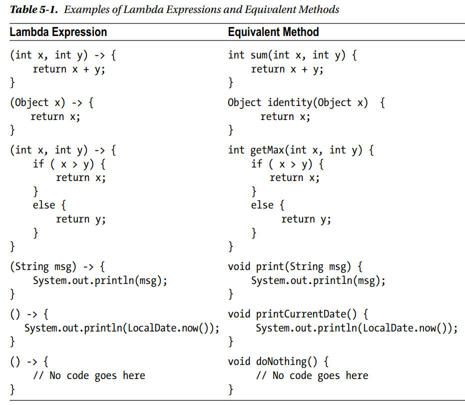
Use case for a Lambda Expression
-
Link to Java 8 best practices by Stephen Colebourne talk.
Syntax for Lambda Expressions
- These are some things that you can do with the parameters that are input to the Lambda Expressions.
Expand Gist
- These are some things that you can do with the body of the lambda expressions.
- The body of a lambda expression can be a block statement or a single expression. A block statement is
enclosed in braces; a single expression is not enclosed in braces.
Expand Gist
Target Typing
- There are two kinds of expressions in Java:
Standalone Expressions
: A standalone expression is an expression whose type can be determined by
the expression without knowing the context of its use. new String("Hello"),
"Hello", new ArrayList<String>(). The types are String, String, and
ArrayList<String>.
Poly Expressions
: A poly expression is an expression that has different types in different
contexts. All lambda expressions in Java are poly expressions. You must use it in a context to know its
type. For example, the expression new ArrayList<>() is a poly expression.
In this:
ArrayList<Long> idList = new ArrayList<>();, its type is
ArrayList<Long>.
Whereas in ArrayList<String> nameList = new ArrayList<>();, its type is ArrayList<String>
- The compiler infers the type of a lambda expression. The context in which a lambda expression is used
expects a type, which is called the
target type. The process of inferring the type of a lambda expression from the context is known as
target typing.
Expand Gist
Behavior Parameterization
- Changing the behavior of a method through its parameters is known as behavior parameterization. This is
also known as passing code as data because you pass code (logic, functionality, or behavior) encapsulated in
lambda expressions to methods as if it is data.
Expand Gist
- In the above example, instead of passing the lambda expression directly as a parameter, you could have
assigned it to a variable of the desired type (
AnotherJoiner in this case) and passed that
variable as an argument instead.
Which contexts can a Lambda Expression be used
- Lambda expressions can be used only in the following contexts:
Assignment Context: A lambda expression may appear to the right-hand side of the assignment
operator in an assignment statement.
For example: ReferenceType variable1 = LambdaExpression;
Method Invocation Context: A lambda expression may appear as an argument to a method or
constructor call.
For example: behavParam.testJoiner(LambdaExpression);
Return Context: A lambda expression may appear in a return statement inside a method, as its
target type is the declared return type of the method.
For example: return LambdaExpression;
Cast Context: A lambda expression may be used if it is preceded by a cast. The type specified in
the cast is its target type.
For example: (Joiner) LambdaExpression;
Functional Interfaces
- A functional interface is simply an interface that has exactly one abstract method.
- The following types of methods in an interface do not count for defining a functional interface:
Default Methods: Recall
default methods
were methods added to an interface that were not abstract. That is, a default
method has an implementation right there in the interface itself.
Static Methods (remember that a method defined as static in an interface also needs to be
implemented right there in the interface itself.)
Public methods inherited from the Object class
Commonly used Functional Interfaces
| Interface Name |
Method |
Description |
| Function<T,R> |
R apply(T t) |
Represents a function that takes an argument of type T and returns a result of type R. |
| BiFunction<T,U,R> |
R apply(T t, U u) |
Represents a function that takes two arguments of types T and U, and returns a result of type
R.
|
| Predicate<T> |
boolean test(T t) |
In mathematics, a predicate is a boolean-valued function that takes an argument and returns true
or false. The function represents a condition that returns true or false for the specified
argument.
|
| BiPredicate<T,U> |
boolean test(T t, U u) |
Represents a predicate with two arguments. |
| Consumer<T> |
void accept(T t) |
Represents an operation that takes an argument, operates on it to produce some side effects, and
returns no result.
|
| BiConsumer<T,U> |
void accept(T t, U u) |
Represents an operation that takes two arguments, operates on them to produce some side effects,
and returns no result.
|
| Supplier<T> |
T get() |
Represents a supplier that returns a value. |
| UnaryOperator<T> |
T apply(T t) |
Inherits from Function<T,T>. Represents a function that takes an argument and
returns a result of the same type.
|
| BinaryOperator<T> |
T apply(T t1, T t2) |
Inherits from BiFunction<T,T,T>. Represents a function that takes two arguments
of the same
type and returns a result of the same type.
|
`
Using the Function<T,R> Interface
- There are also several specialized versions of these interfaces for frequently used
primitive data types.
-
IntFunction<R>,
LongFunction<R>, and
DoubleFunction<R>
take an int, a long, and a double as an argument, respectively, and return a value of type R.
-
ToIntFunction<T>,
ToLongFunction<T>, and
ToDoubleFunction<T> take an argument of type T and return an int, a long, and a double,
respectively.
- Similar specialized functions exist for other types of generic functions listed in the table.
Expand Gist
- The
Function interface contains the following default and static methods:
default <V> Function<V,R> compose(Function<? super V,? extends T> before)
default <V> Function<T,V> andThen(Function<? super R,? extends V> after)
static <T> Function<T,T> identity()
- Note that the
BiFunction interface contains only the
andThen method,
not the
thenCompose method.
- So how do you use these?
- And what is the
difference
between andThen and
compose
Expand Gist
Using the Predicate<T> Interface
- A predicate represents a condition that is either true or false for a given input.
- The Predicate interface contains the following default and static methods that let you compose a predicate
based on other predicates using logical NOT, AND, and OR.
default Predicate<T> negate()
default Predicate<T> and(Predicate<? super T> other)
default Predicate<T> or(Predicate<? super T> other)
static <T> Predicate<T> isEqual(Object targetRef)
Expand Gist
Method References
- A method reference is shorthand to create a lambda expression using an existing method.
- Using method references makes your lambda expressions more readable and concise; it also lets you use
the existing methods.
- If a lambda expression contains a body that is an expression using a method call, you can use a method
reference in place of that lambda expression.
- The general syntax for a method reference is: <Qualifier>::<MethodName>. The
Qualifier depends on the type of the method reference. The MethodName is the name
of the method.
- The syntax for method references allows specifying only the method name. You cannot specify the parameter
types and return type of the method. Recall that a method reference is shorthand for a lambda expression.
The target type, which is always a functional interface, determines the method's details. If the method is
an overloaded method, the compiler will choose the most specific method based on the context.
- A method reference does not call the method when it is declared. The method is called later when the
method
of its target type is called.
Types of Method References
| Syntax |
Description |
| TypeName::staticMethod |
A method reference to a static method of a class, an interface, or an enum. |
| objectRef::instanceMethod |
A method reference to an instance method of the specified object |
| ClassName::instanceMethod |
A method reference to an instance method of an arbitrary object of the specified class |
| TypeName.super::instanceMethod |
A method reference to an instance method of the supertype of a particular object |
| ClassName::new |
A constructor reference to the constructor of the specified class |
| ArrayTypeName::new |
An array constructor reference to the constructor of the specified array type |
Static Method References
- A static method reference is used to use a static method of a type as a lambda expression. The type could
be a
class, an
interface, or an
enum.
Expand Gist
Instance Method References
- An instance method is invoked on an object's reference.
- The object reference on which an instance method is invoked is known as the receiver of the method
invocation.
- //TODO: Bound Receiver, Unbound Receiver
Supertype Instance Method References
//TOOD
Constructor References
- Sometimes the body of a lambda expression may be just an object creation expression.
- The syntax for using a constructor is:
ClassName::new or
ArrayTypeName::new.
- The
ClassName is the name of the class that is to be instantiated. It cannot be the name of
an abstract class.
- The keyword
new refers to the constructor of the class.
- A class may have multiple constructors. The syntax does not provide a way to refer to a specific
constructor. The compiler selects a specific constructor based on the context. It looks at the target type
and the number of arguments in the abstract method of the target type. The constructor whose number of
arguments matches with the number of arguments in the abstract method of the target type is chosen.
Expand Gist
- Arrays in Java do not have constructors. There is a special syntax to use constructor references for
arrays. Array constructors are treated to have one argument of int type that is the size of the array.
Expand Gist
- The syntax for the constructor reference for arrays supports creating an array of multiple dimensions.
However, you can specify the length for only the first dimension.
Generic Method References
//TODO
Lexical Scoping
- A scope is the part of a Java program within which a name can be referred to without using a qualifier.
Classes and
methods define their own scope. Scopes may be nested.
- Even though a lambda expression looks like a method declaration, it does not define a scope of its own. It
exists in its enclosing scope. This is known as
lexical scoping for lambda expressions. For example,
when a lambda
expression is used inside a method, the lambda expression exists in the scope of the method.
- The meanings of the keywords
this and
super are the same inside the lambda
expression and its enclosing
method. Note that this is different from the meanings of these keywords inside a local and anonymous inner
class in
which the keyword
this refers to the current instance of the local and anonymous inner class,
not its enclosing class.
- Lexical scoping of a lambda expression means that variables declared in the lambda expression, including
its
parameters, exist in the enclosing scope. Simple names in a scope must be unique. It means that a lambda
expression
cannot redefine variables with the same name that already exist in the enclosing scope.
Expand Gist
Variable Capture
-
-
SO link
explaining why Local Variables are thread safe in java
- Why does everything have to be so confusing:
SO
Link explaining why variables inside a lambda have to be final or effectively final.
- A lambda expression can access instance and class variables of a class whether they are effectively final or not. If instance and class variables are not final, they
can be modified inside the body of the lambda expressions. A lambda expression keeps a copy of the local variables used in its body. If the local variables are
reference variables, a copy of the references is kept, not a copy of the objects.
Expand Gist
- And as described above, the instance variables can be used as well as modified within the lambda expression
Expand Gist
- The semantics of
this is actually one of the areas where Java lambdas differ from anonymous
implementations of interfaces. An anonymous interface implementation can have its own instance variables
which are referenced via the
this reference. However, an lambda cannot have its own instance
variables, so
this always points to the enclosing object.
Source.
How do you throw exceptions in a Lambda Expression
What is a Stream
- A stream is a sequence of data elements supporting sequential and parallel
aggregate operations.
- So what is an
aggregate operation: An aggregate operation computes a single value from a
collection of values. The result of an aggregate operation may be simply a primitive value, an object, or a
void. Note that an object may represent a single entity such as a person or a collection of values such as a
list, a set, a map, etc.
- Computing the sum of all elements in a stream of integers, mapping all names in list to their lengths,
etc. are examples of aggregate operations on streams.
- So what is the difference between a Stream and a Collection: Both are abstractions for a collection of
data elements. Collections focus on storage of data elements for efficient access whereas streams focus on
aggregate computations on data elements from a data source that is typically, but not necessarily,
collections.
- Following are the points of comparison between Streams and Collections.
Streams have no storage: A collection is an in-memory data structure that stores all its
elements. All elements must exist in memory before they are added to the collection. A stream has no
storage; it does not store elements. A stream pulls elements from a data source on-demand and passes
them to a pipeline of operations for processing.
Infinite Streams: A collection stores all its elements in memory, and therefore, it is not
possible to have an infinite number of elements in a collection. A stream pulls its elements from a data
source that can be a collection, a function that generates data, an I/O channel, etc. Because a function
can generate an infinite number of elements and a stream can pull data from it on demand, it is possible
to have a stream representing a sequence of infinite data elements.
Internal Iteration vs. External Iteration: YOu are normally accustomed to writing for-each loops
for iterating over a collection. This code has to be written by you - the client. In contrast, streams
will internally iterate over the collection. This will become clear once you see the example. But,
streams also provide an
iterator() method that returns an Iterator to be used for external iteration of its
elements. You will "never" need to iterate elements of a stream yourself using its iterator.
Imperative vs Functional: The Streams API supports functional programming. Operations on a stream
produce a result without modifying the data source.
Stream Operations: A Stream supports two types of data operations - Intermediate, Terminal.
Intermediate operations are known as lazy operations whereas terminal operations are known as eager
operations. Operations are known as lazy and eager based on the way they pull the data elements from the
data source. A lazy operation on a stream does not process the elements of the stream until another
eager operation is called on the stream.
- Streams connect though a chain of operations forming a stream pipeline. A stream is inherently lazy
until you call a terminal operation on it. An intermediate operation on a stream produces another
stream. When you call a terminal operation on a stream, the elements are pulled from the data source and
pass through the stream pipeline. Each intermediate operation takes elements from an input stream and
transforms the elements to produce an output stream. The terminal operation takes inputs from a stream
and produces the result.
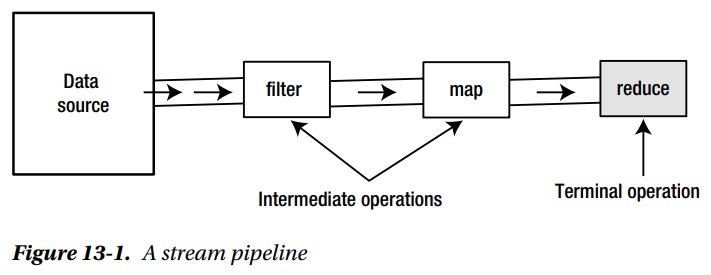
- The above figure shows a stream pipeline with a data source, three streams, and three operations. The
filter and map operations are intermediate operations and the reduce operation is a terminal operation.
- In the figure, the first stream (on the left) pulls data from the data source and becomes the input
source for the filter operation. The filter operation produces another stream containing data for which
the filter condition is true. The stream produced by the filter operation becomes the input for the map
operation. The map operation produces another stream that contains the mapped data. The stream produced
by the map operation becomes the input for the reduce operation. The reduce operation is a terminal
operation. It computes and returns the result, and then the processing of stream is over.
- Stream processing does not start until a terminal operation is called. If you just call intermediate
operations on a stream, nothing exciting happens, except that they create another stream objects in
memory, without reading data from the data source. This implies that you must use a terminal operation
on a stream for it to process the data to produce a result.
Ordered Streams: A data source is said to have an encounter order if the order in which
the elements are traversed by an iterator is predictable and meaningful. For example, arrays and lists
always have an encounter order that is from the element at index 0 to the element at the last index.
Streams based on data sources having an encounter order also have an encounter order for their elements.
- Sometimes a stream operation may impose an encounter order on an otherwise unordered stream. For
example, a HashSet does not have an encounter order for its elements. However, applying a sort operation
on a stream based on a HashSet imposes an encounter order so that elements are yielded in sorted order.
Streams Are Not Reusable: Unlike collections, streams are not reusable. If you need to perform a
computation on the same elements from the same data source again, you must recreate the stream pipeline.
Architecture of the Streams API:
- All stream interfaces inherit from the BaseStream interface, which inherits from the
AutoCloseable interface from the java.lang package. In practice, most streams use
collections as their data source, and collections do not need to be closed. When a stream is based on a
closeable data source such as a file I/O channel, you may create the instance of the stream using a
try-with-resources statement to get it closed automatically.
- The Stream<T> interface represents a stream of the element type T; for
example, a Stream<Person> represents a stream of Person objects.
- Note that the Stream<T> interface takes a type parameter T, which means
that you can use it only to work with
the elements of the reference type. If you have to work with a stream of primitive type such as int,
long, etc. you should use specialized stream interfaces called
IntStream, LongStream, and DoubleStream to work with primitives
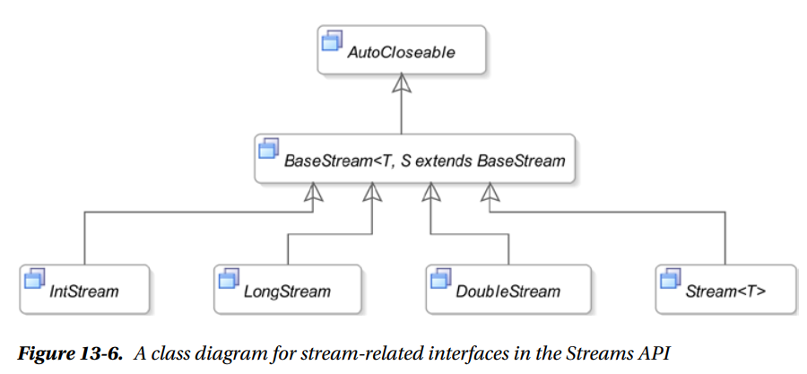
- Basic example using streams
Expand Gist
Creating Streams
Streams from Values: The Stream interface contains the following two static of()
methods to create a sequential Stream from a single value
and multiple values:
<T> Stream<T> of(T t)
<T> Stream<T> of(T... values)
- The Stream.of() method creates a stream whose elements are of reference type. If you want
to create a stream of primitive values from an array of primitive type, you need to use the
Arrays.stream() method.
Expand Gist
- The Stream interface also supports creating a stream using the builder pattern using the
Stream.Builder<T> interface whose instance represents a stream builder. The builder()
static method of the Stream interface returns a stream builder.
- This is how you get a Stream Builder:
Stream.Builder<String> builder = Stream.builder();
- You can then add elements to the stream by using either add or accept
methods. Why do you need two methods to add elements to a Stream, you ask? Well because,
Stream.Builder<T> interface inherits from the Consumer<T> interface,
(meaning, interface Builder<T> extends Consumer<T>)
and therefore it inherits the accept method from the Consumer<T>
interface.
- The add() method returns the reference to the builder that makes it suitable for adding
multiple elements using method chaining. Once you are done adding elements, call the
build() method to create the stream. You cannot add elements to the stream after you call
the build() method; doing so results in an IllegalStateException runtime
exception.
Expand Gist
Empty Streams: An empty stream is a stream with no elements. The Stream interface contains an
empty() static method to create an empty sequential stream.
Expand Gist
Streams from Functions: The Stream interface contains the following two static
methods to generate an infinite stream:
- <T> Stream<T> iterate(T seed, UnaryOperator<T> f)
- <T> Stream<T> generate(Supplier<T> s)
a) Using the Stream.iterate() Method:
- The iterate() method takes two arguments: a seed and a function. The first argument is a
seed that is the first element of the stream. The second element is generated by applying the function
to the first element. The third element is generated by applying the function on the second element and
so on.
- Its elements are - seed, f(seed), f(f(seed)), f(f(f(seed))), and so on.
Expand Gist
b) Using the Stream.generate() Method:
- The generate(Supplier <T> s) method uses the specified Supplier to
generate an
infinite sequential unordered stream.
Expand Gist
Streams from Arrays: The Arrays class in the java.util package contains an
overloaded stream() static method to create sequential streams from arrays.
You can use it to create an IntStream from an int array, a
LongStream from a long array, a DoubleStream from a
double array, and a Stream<T> from an array of the reference type
T.
- Recall when we saw in the Stream.of(T... t) method in the first point, we could also pass
in an array over there as well. So you can create a stream from a reference type array using two
methods: Arrays.stream(T[] t) and Stream.of(T...t) method.
Expand Gist
Streams from Collections: The Collection interface contains the stream() and parallelStream()
methods that create sequential and parallel streams from a Collection, respectively.
Expand Gist
Streams from Files: //TODO
Streams from Other Sources: //TODO
Drawbacks of using Streams
Representing an Optional Value
- An
Optional is a wrapper for a non-null value that may or may not contain a non-null value.
Its
isPresent() method returns true if it contains a non-null value, false otherwise. Its
get() method returns the non-null value if it contains a non-null value, and throws a
NoSuchElementException otherwise. This implies that when a method returns an
Optional, you must, as a practice, check if it contains a non-null value before asking it for
the value. If you use the
get() method before making sure it contains a non-null value, you may
get
a
NoSuchElementException instead of getting a
NullPointerException.
- There are 4 methods to get the value from an optional:
T get()
T orElse(T defaultValue)
T orElseGet(Supplier<? extends T> defaultSupplier)
<X extends Throwable> T orElseThrow(Supplier<? extends X> exceptionSupplier)
throws X extends Throwable
Expand Gist
Applying operations on Streams
| Operation |
Type |
Description |
| distinct |
Intermediate |
Returns a stream consisting of the distinct elements of this stream. Elements e1
and e2 are considered equal if e1.equals(e2) returns true.
|
| filter |
Intermediate |
Returns a stream consisting of the elements of this stream that match the specified predicate.
|
| flatMap |
Intermediate |
Returns a stream consisting of the results of applying the specified function to the elements of
this stream. The function produces a stream for each input element and the output streams are
flattened. Performs one-to-many mapping.
|
| limit |
Intermediate |
Returns a stream consisting of the elements of this stream, truncated to be no longer than the
specified size.
|
| map |
Intermediate |
Returns a stream consisting of the results of applying the specified function to the elements of
this stream. Performs one-to-one mapping.
|
| peek |
Intermediate |
Returns a stream whose elements consist of this stream. It applies the specified action as it
consumes elements of this stream. It is mainly used for debugging purposes.
|
| skip |
Intermediate |
Discards the first n elements of the stream and returns the remaining stream. If this stream
contains fewer than n elements, an empty stream is returned.
|
| sorted |
Intermediate |
Returns a stream consisting of the elements of this stream, sorted according to
natural order or the specified Comparator. For an ordered stream, the sort is
stable.
|
| mapToObj |
Intermediate |
<U> Stream<U> mapToObj(IntFunction<? extends U> mapper)
mapToObj create from each Integer an object from type U. This method only purpose is to convert
IntStream to Stream.
|
| allMatch |
Terminal |
Returns true if all elements in the stream match the specified predicate, false
otherwise. Returns true if the stream is empty.
|
| anyMatch |
Terminal |
Returns true if any element in the stream matches the specified predicate, false
otherwise. Returns false if the stream is empty.
|
| findAny |
Terminal |
Returns any element from the stream. An empty Optional object is for an empty stream |
| findFirst |
Terminal |
Returns the first element of the stream. For an ordered stream, it returns the first
element in the encounter order; for an unordered stream, it returns any element.
|
| noneMatch |
Terminal |
Returns true if no elements in the stream match the specified predicate, false
otherwise. Returns true if the stream is empty.
|
| forEach |
Terminal |
Applies an action for each element in the stream.
|
| reduce |
Terminal |
Applies a reduction operation to computes a single value from the stream.
|
Debugging a Stream Pipeline
- Sometimes you may need to look at the elements of the streams as they pass through the pipeline. You can
do so by using the
peek(Consumer<? super T> action) method of the
Stream<T> interface that is
meant only
for debugging purposes. It produces a stream after applying an action on each input element.
Expand Gist
Applying the ForEach Operation
- The
Stream<T> interface has two methods to perform the forEach operation:
void forEach(Consumer<? super T> action)
void forEachOrdered(Consumer<? super T> action)
- Why the need for 2 methods:
Sometimes the order in which the action is
applied for the elements in a stream is important, and sometimes it is not. The
forEach()
method does not guarantee
the order in which the action for each element in the stream is applied. The
forEachOrdered()
method performs the
action in the encounter order of elements defined by the stream. Use the
forEachOrdered()
method for a parallel
stream only when necessary because it may slow down processing.
Expand Gist
Applying the Map Operation
- A map operation (also known as mapping) applies a function to each element of the input stream to produce
another stream (also called an output stream or a mapped stream). The number of elements in the input and
output streams is the same. The operation does not modify the elements of the input stream (at least it is
not supposed to).
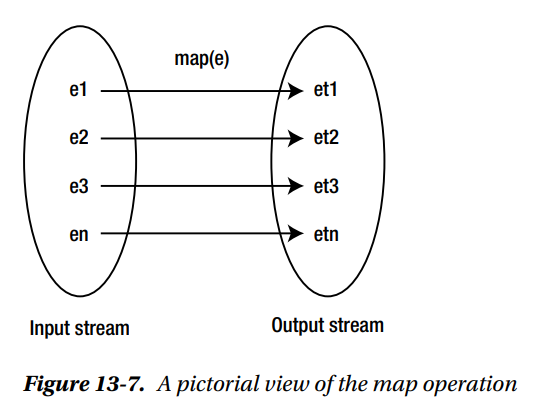
- You can apply the map operation on a stream using one of the following methods of the Stream<T>
interface:
<R> Stream<R> map(Function<? super T,? extends R> mapper)
DoubleStream mapToDouble(ToDoubleFunction<? super T> mapper)
IntStream mapToInt(ToIntFunction<? super T> mapper)
LongStream mapToLong(ToLongFunction<? super T> mapper)
- We have already looked at examples of
map in the previous examples.
Flattening Streams
-So far we have seen a one-to-one mapping using the
map operation where each element of the
input stream was mapped to one element of the output stream. But in addition to this, the Stream API also
supports one-to-many mapping.
- This is basically to create a stream
of streams. Think about how you can create a HashMap of
HashMaps. Similarly, we are creating a Stream, where each "element" is a Stream.
- Suppose the input stream is a
Stream<T> and the
mapped stream is
Stream<Stream<R>> where
T and
R may be the
same or
different.
- Then it "flattens" the output stream, which is currently a Stream of Streams, to produce a single Stream.
So basically it converts a
Stream<Stream<R>> to
Stream<R>
Expand Gist
- Does this make sense now?
Applying the Reduce Operation
- The reduce operation combines all elements of a stream to produce a single value by applying a combining
function
repeatedly. Computing the sum, maximum, average, count, etc. of elements of a stream of integers are
examples of the reduce operation. Collecting elements of a stream in a List, Set, or Map is also an example
of the reduce operation.
- The reduce operation takes two parameters called a
seed (also called an
initial value) and
an
accumulator. The accumulator is a function.
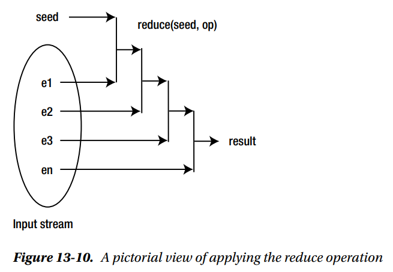
- The
Stream<T> interface contains a
reduce() method to perform the reduce
operation. The method has three overloaded versions:
T reduce(T identity, BinaryOperator<T> accumulator)
<U> U reduce
(U identity, BiFunction<U,? super T,U> accumulator, BinaryOperator<U> combiner)
Optional<T> reduce(BinaryOperator<T> accumulator)
Useful Links:
Github link to lectures on Streams
Lecture 5: JDK, JRE and JVM
- Source on SO
here.
- JVM: The Java Virtual Machine (JVM) is the virtual machine that runs the Java bytecodes. The JVM doesn't
understand Java source code; that's why you need to compile your
*.java files to obtain
*.class files that contain the bytecodes understood by the JVM. This compilation is done by
using the
javac command. After compilation, as many
.class files will be generated
as the number of classes in java program (eh.. not really)
- This is the wrong understanding: "Note that inner classes do not get .class files of their own.
Instead, they are present in the .class files of their parent classes itself." [This incorrect understanding was because when you look at the file in IntelliJ it shows that,
both, the outer class and the inner class are in the same file. But, if you go into file explorer in your system and see, you will see that the outer and the inner classes
are actually in separate files.]
- The outer class, in this case, is
ShadowTest2. This is present in the class file called
ShadowTest2.class. The inner class is called
FirstLevel2.
And this is present in the class called
ShadowTest2$FirstLevel2.class. This is the format, the parent class name, then the '$' symbol followed by the inner class
name.
Expand Gist
- On the other hand, classes that are defined as below get their own .class files.
Expand Gist
- The generated .class files are also the entity that
allows Java to be a "portable language" (write once, run anywhere). Indeed, there are specific
implementations of the JVM for different systems (Windows, Linux, macOS, see the Wikipedia list), the aim is
that with the same bytecodes they all give the same results.
- JRE: The Java Runtime Environment (JRE) provides the libraries, the Java Virtual Machine, and other
components to run applets and applications written in the Java programming language. (The point is that, you
need only the JRE if your sole goal is to only run a Java program.)
In addition, two key
deployment technologies are part of the JRE: Java Plug-in, which enables applets to run in popular browsers;
and Java Web Start, which deploys standalone applications over a network. It is also the foundation for the
technologies in the Java 2 Platform, Enterprise Edition (J2EE) for enterprise software development and
deployment. The JRE does not contain tools and utilities such as compilers or debuggers for developing
applets and applications.
- JDK: The JDK is a superset of the JRE, and contains everything that is in the JRE, plus tools such as the
compilers and debuggers necessary for developing applets and applications.
- Different parts of the Oracle Java SE lineup can be seen
here.
Lecture 6: Exploring First Skeleton Program
- It is not necessary that the name of the file should always match the name of the class that is defined
inside it. If a class is not explicitly defined as
public, then the name of the class and the
name of file within which the class is defined may differ.
Source
on SO.
- Consider the following scenarios:
a) File name is same as class name. Class is defined
public. Everything works as expected.
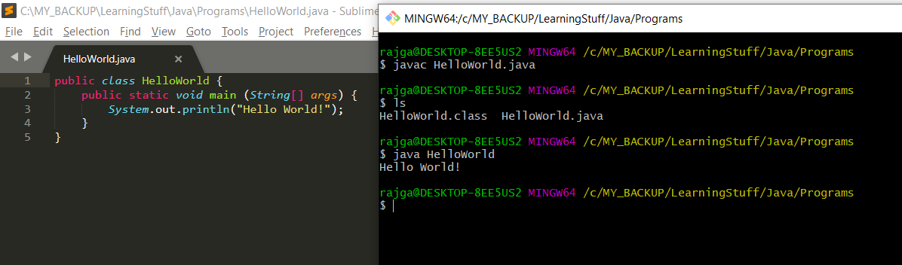
b) File name is same as class name. Class is not defined
public. Hence the default access is
applied. Default access in java is
package-private. Everything still works as expected.
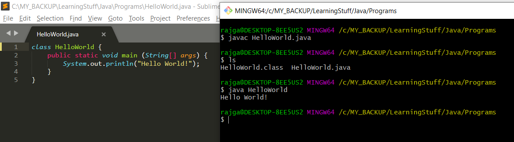
c) File name is different from the class name. Class is not defined
public. Note that in this
case, the
class file that is generated has the name as
HelloWorldNew. So we run
java HelloWorldNew in order to run the code in the jvm.
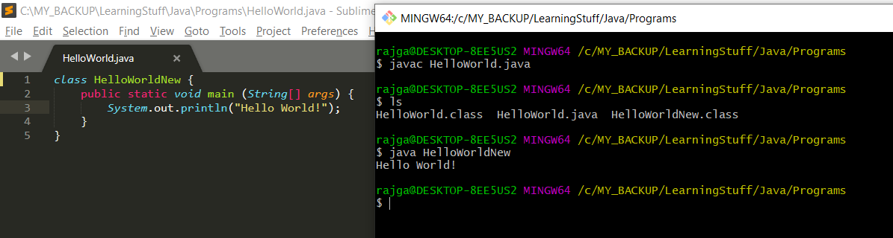
d) File name is different from the class name. Class is defined
public. Note that now the code
does not even compile. This means that, in order to have the class name different from the file name work,
you cannot define the class to be
public.
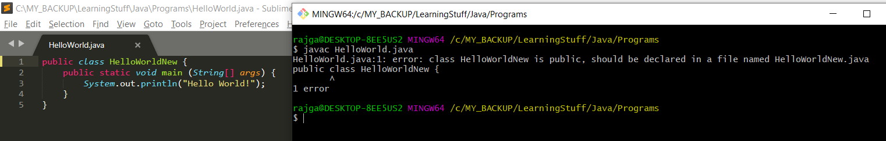
Lecture 13: Rules for Variable Names
Lecture 19: Trick to prevent the skipping of String input value
Lecture 27: Method Overloading
-
Source on Baeldung
- Method Overloading can be implemented in two different ways:
a) implementing two or more methods that have the
same name but different number of arguments
b) implementing two or more methods that have the
same name but take arguments of different types
However, do note that it's not possible to have two method implementations that differ only in their return
types. In this case, the code simply wouldn't compile because of the method call ambiguity - the compiler
wouldn't know which implementation of multiply() to call.
Expand Gist
Lecture 37: static class members
Lecture 321: Introduction
-
Link to lecture.
- First we need to define a few concepts:
a)
Process
: unit of executiong that has its own memory space. An instance of JVM itself would run as a process for instance. So when we are
running a java application, we are in effect kicking off a process. The terms "process" and "application" are used interchangeably. Each application/process that runs gets
its own memory space, known as the
heap. The heap isn't shared between two processes, ie., each process gets its own heap.
b)
Thread:
: single unit of execution within a process. Each process can have multiple threads. In java, every application will have atleast one
thread which is the
main thread. Every thread that is created by a process shares that process's memory space, ie. its heap. Apart from that, each thread's also gets
its
own thread stack. This is memory that only that thread will have access to.
Lecture 322: Java Threads and Thread Basics
-
Link to lecture.
- A
Thread is a thread of execution in a program.
- Each instance of a thread has some state. These are JVM specific states and have nothing to do with the OS thread states.
- A thread also has a priority that you can assign it from 1 (lowest) to 10 (highest).
Lecture 323: Thread creation and execution
-
Link to lecture.
Expand Gist 
- In the above example, the main thread does not block just because we created a new thread. It
appears to block because the JVM does not terminate immediately after
the
main thread completes. This behavior occurs because the JVM waits for all
non-daemon threads to complete before it shuts down. By default, threads we create using the
Thread class are non-daemon threads. These threads prevent the JVM from shutting down, even if the main thread has completed its execution. The JVM shuts down
only once all non-daemon threads have finished their tasks. This is why it seems like the main thread is "blocked" even after its execution. In reality, it's not the main
thread that's blocking; it's the JVM waiting for other threads to finish. If we want the JVM to terminate regardless of other threads, we can set a thread as a daemon
thread by running
thread.setDaemon(true). In this case, as soon as the main thread completes, the JVM terminates, and any running daemon threads are stopped
abruptly.
- Note that calling the
run() method on the class is not going to start it as a new thread. In order to start computation on a new thread you should call the
start() method.
Lecture 324: Interacting with a running thread
Lecture 326: Multithreading and Memory
-
Link to lecture.
- Each thread has its own stack for local variables and method calls. One thread doesn't have access to another thread's stack.
- Every concurrent thread additionally has access to the process memory, or the heap. This shared space allows all threads to read and modify the same objects. So when one
thread changes an object on the heap, that change immediately becomes visible to other threads.
Show Image
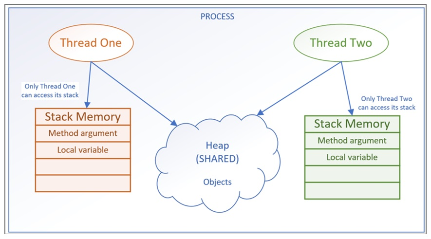
- In a nutshell, the code below works because the StopWatch class itself does not maintain any
shared mutable state.
- Yes, all the three thread use the same StopWatch instance, but the methods in the instance do not modify any instance variables or rely on mutable shared data during
execution. The
countDown methods perform all their operations locally. The
threadName, the
unitCount,
color, the loop variable
i are all
thread-local, meaning that each thread works on its own copy of the data. A race condition occurs when multiple threads try to modify shared data simultaneously. The only
shared object is the
StopWatch instance, but no state within the
StopWatch instance is modified during the method execution.
- You might expect a race condition if you thought
StopWatch maintained a shared state (like a global counter). However,
StopWatch is only a wrapper for the
countDown behavior and does not hold such state. If the StopWatch class had a shared mutable field (e.g., a currentCount variable that all threads updated), then a
race condition would occur unless proper synchronization mechanisms (like
synchronized or
Lock) were used.
- Ofcourse you could always have created 3 different instances of teh
StopWatch class to sidestep this.
Expand Gist
Lecture 327: Concurrent Thread Concepts: Interleaving, Atomicity, Memory Consistency, Volatile
-
Link to lecture.
-
Atomic
: an operation that is performed as a single, indivisible step. This means that it cannot be interrupted or observed in an incomplete
state by other threads, ensuring its thread-safety.
-
Memory Consistency Errors
: The OS may read from heap variables and make a copy of the value in each thread's own cache. (This cache is
different from the stack that is allocated to each thread). One thread can modify a shared variable, but this change might not be immediately reflected or visible on the
heap. Instead, it's first updated in the thread's local cache.
- Consider the below code example that shows this issue. There are other issues in the code as well, like using the busy-wait loop which is inefficient because it consumes
cpu cycles unnecessarily while waiting. A better approach would be to use
wait/notify,
Lock, or
CountDownLatch.
Expand Gist
-
volatile
: ensures that the variable is always read from, adn written to the amin memory, rather than from any thread-specific
caches. This provides memory consistency for this variable's value across threads.
Lecture 328: Synchronization, synchronized methods